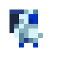

Equipo de desarrollo

Edwin Leonardo Chitiva Garcia
Desarrollo del juego en Godot, diseño de niveles, pruebas de usabilidad, documentación y este sitio web.
Estudiante de Ingeniería Multimedia · Curso Diseño Interactivo (213030) · UNAD
Créditos de recursos
El arte y los sonidos son de uso libre. Estos son sus autores:
| Recurso | Autor | Uso en el juego |
|---|---|---|
| Space Runner Assets | Matt Walkden (CC0) | Astronauta, alienígena, suelo, combustible y efectos |
| New Platformer Pack, Interface Sounds | Kenney (CC0) | Sonidos del juego y de los menús |
| Pattern Pack (Pixel), Planets | Kenney (CC0) | Fondo y planetas |
| Droid Zapper | Desconocido (CC0) | Droide del nivel 2 |
| Space Riddle | Desconocido (CC0) | Música de fondo |
| Jersey 15 | Sarah Cadigan-Fried (OFL) | Fuente del juego y de los títulos de este sitio |